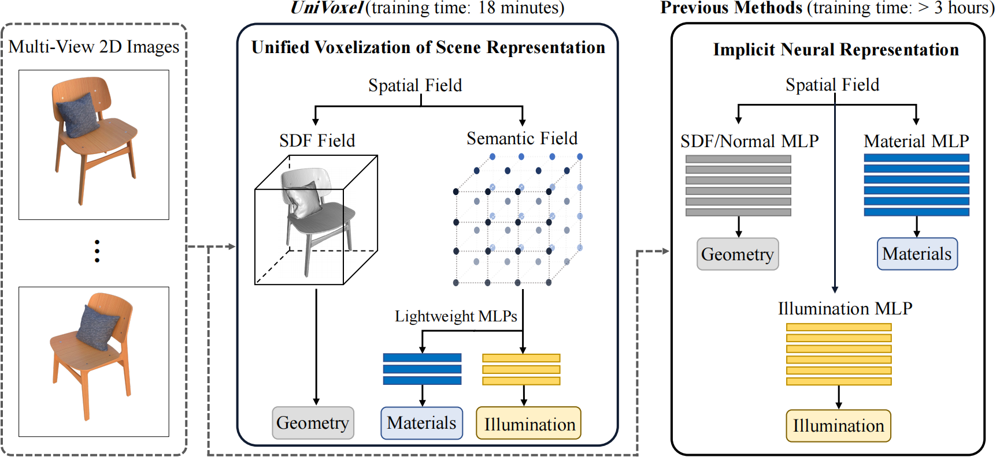
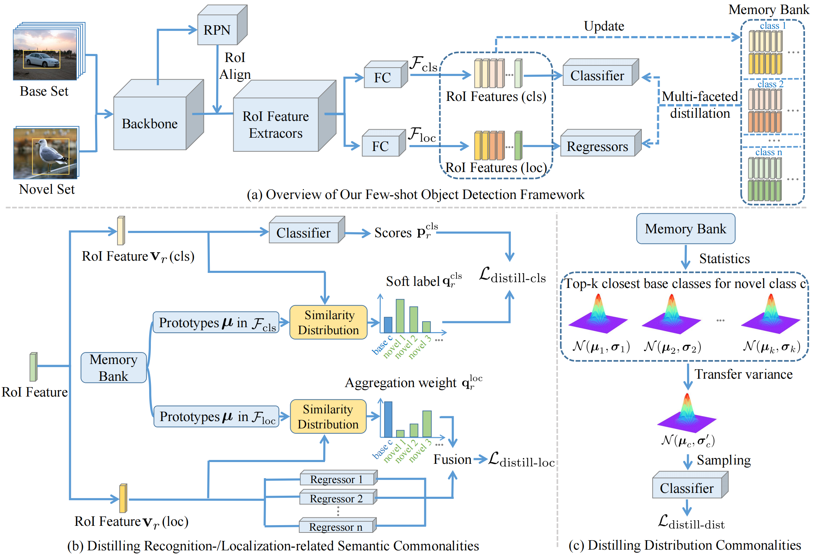
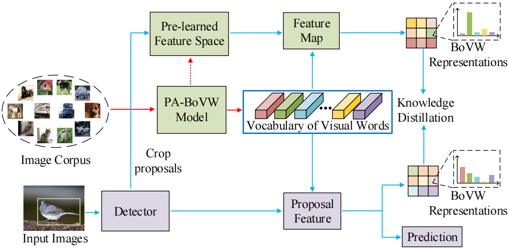

|
Shuang Wu I'm a second-year Ph.D. student at Nanjing University, supervised by Prof. Yao Yao and Prof. Xun Cao. Previously, I was a researcher at SenseTime Research. I received my Master's degree in Computer Science from Harbin Institute of Technology, Shenzhen, supervised by Prof. Wenjie Pei and Prof. Guangming Lu, and my Bachelor's degree in Computer Science from Sichuan University. |
{kind=link}
ResearchMy research interests lie on 3D Generative Models, 3D Reconstruction and World Models. I am always open to academic collaborations. Please feel free to contact me by email. |

|
Direct3D-S2: Gigascale 3D Generation Made Easy with Spatial Sparse Attention
Shuang Wu*, Youtian Lin*, Feihu Zhang, Yifei Zeng, Yikang Yang, Yajie Bao, Jiachen Qian, Siyu Zhu, Xun Cao, Philip Torr, Yao Yao NeurIPS, 2025 project page / code / demo / paper A scalable 3D generation framework based on sparse volumes that achieves superior output quality with dramatically reduced training costs. |
|
|
High-quality Text-to-3D Character Generation with SparseCubes and Sparse Transformers
Jiachen Qian, Hongye Yang, Shuang Wu, Jingxi Xu, Feihu Zhang ICLR, 2025 paper A sparse differentiable mesh representation method, termed SparseCubes, alongside a sparse transformer network designed to generate high-quality 3D models. |

|
Direct3D: Scalable Image-to-3D Generation via 3D Latent Diffusion Transformer
Shuang Wu*, Youtian Lin*, Feihu Zhang, Yifei Zeng, Jingxi Xu, Philip Torr, Xun Cao, Yao Yao NeurIPS, 2024 project page / code / paper A native 3D generative model scalable to in-the-wild input images, without requiring a multiview diffusion model or SDS optimization. |
|
 |
UniVoxel: Fast Inverse Rendering by Unified Voxelization of Scene Representation
Shuang Wu*, Songlin Tang*, Guangming Lu, Jianzhuang Liu, Wenjie Pei ECCV, 2024 paper A unified voxelization framework for explicit learning of scene representations, dubbed UniVoxel, which allows for efficient modeling of the geometry, materials and illumination jointly, thereby accelerating the inverse rendering significantly. |
|
 |
Multi-Faceted Distillation of Base-Novel Commonality for Few-Shot Object Detection
Shuang Wu, Wenjie Pei, Dianwen Mei, Fanglin Chen, Jiandong Tian, Guangming Lu ECCV, 2022 code / paper A few-shot object detection framework based on a memory bank, which is able to distill all three types of learned commonalities jointly and efficiently in an end-to-end manner. |
|
 |
Few-Shot Object Detection by Knowledge Distillation Using Bag-of-Visual-Words Representations
Wenjie Pei*, Shuang Wu*, Dianwen Mei, Fanglin Chen, Jiandong Tian, Guangming Lu ECCV, 2022 paper A novel knowledge distillation framework to guide the learning of the object detector and thereby restrain the overfitting in both the pretraining stage on base classes and fine-tuning stage on novel classes. |
|
Design and source code from Jon Barron's website |